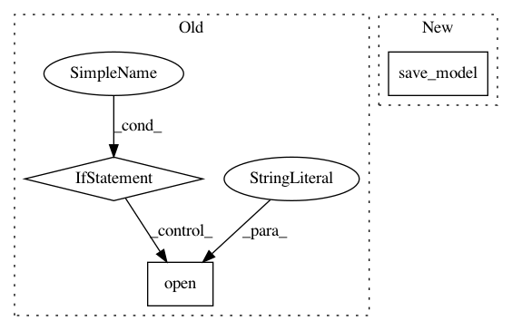

e81f54bb33f4a41c2ebdfdda41e5d70b52c32c87,pyannote/audio/callback.py,LoggingCallback,on_epoch_end,#LoggingCallback#Any#Any#,145
Before Change
pass
// save optimizer state every 10 epochs
if epoch % 10 == 0:
optimizer = self.model.optimizer
state = {"optimizer_config": keras.optimizers.serialize(optimizer),
"weights": optimizer.get_weights()}
optimizer_pkl = self.OPTIMIZER_PKL.format(
log_dir=self.log_dir, epoch=epoch)
with open(optimizer_pkl, mode="wb") as fp:
pickle.dump(state, fp)
for subset, name in self.log:
value, minimize = self.get_value(epoch, name, subset, logs=logs)
After Change
// . overwrite only in case of a restart
// . include optimizer only every 10 epochs
keras.models.save_model(self.model, weights_h5,
overwrite=self.restart,
include_optimizer=(epoch % 10 == 0))
for subset, name in self.log:
value, minimize = self.get_value(epoch, name, subset, logs=logs)
In pattern: SUPERPATTERN
Frequency: 3
Non-data size: 3
Instances
Project Name: pyannote/pyannote-audio
Commit Name: e81f54bb33f4a41c2ebdfdda41e5d70b52c32c87
Time: 2017-05-05
Author: bredin@limsi.fr
File Name: pyannote/audio/callback.py
Class Name: LoggingCallback
Method Name: on_epoch_end
Project Name: lcswillems/torch-rl
Commit Name: 907a86e9c4af4ad476c9d4a7201f87f01b835f0d
Time: 2018-04-14
Author: lcswillems@gmail.com
File Name: train.py
Class Name:
Method Name:
Project Name: automl/auto-sklearn
Commit Name: 838f3aa207070d7f8f02f529a5f45076e0caab66
Time: 2015-10-01
Author: feurerm@informatik.uni-freiburg.de
File Name: autosklearn/cli/base_interface.py
Class Name:
Method Name: make_mode_holdout